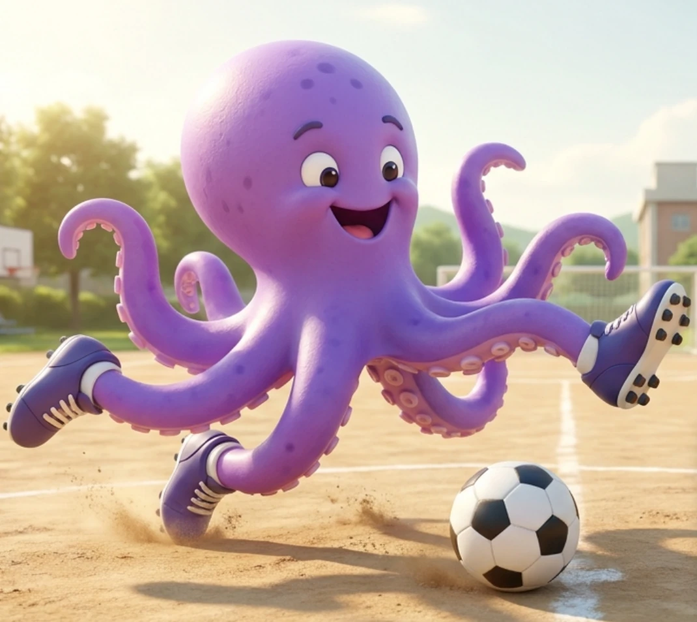
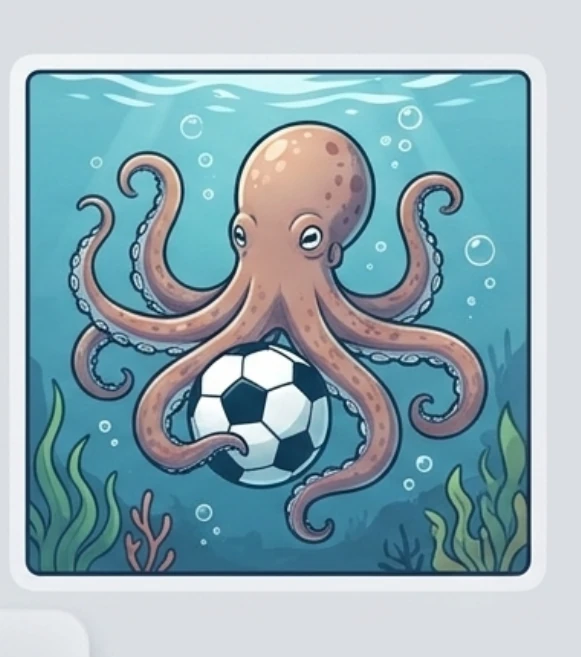
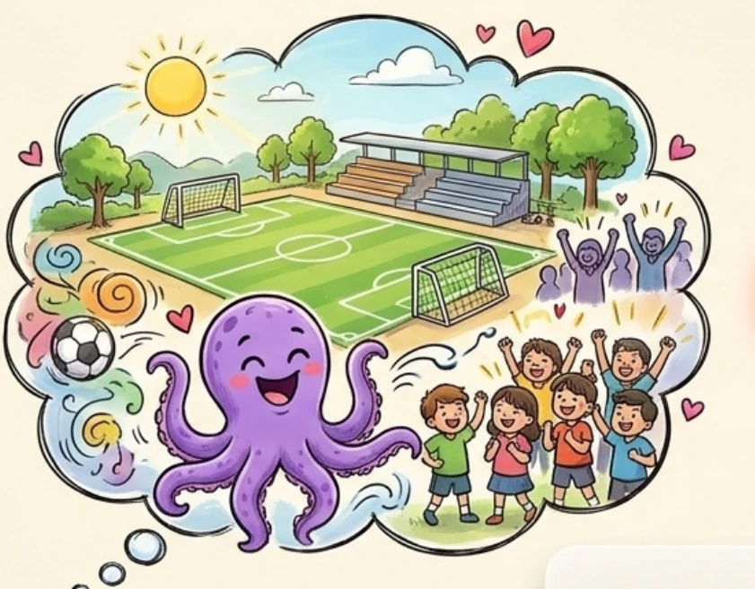
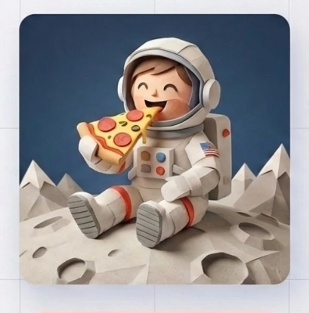

용산청소년센터 · 1주차
내가 상상한 걸
AI가 만들어 주네?
상상하고 → 말하고 → 만들고 → 고쳐 보기

먼저 생각해 봐요
이 그림을 만들려면
AI에게 뭐라고 말해야 할까요?
첫 번째 말
짧게 말해 볼까요?
“축구하는 문어를 그려 줘.”

어떤 그림이 나올까요?
장소와 모습은 AI가 다르게 채울 수도 있어요.
내 생각과 AI의 그림 비교
어디가 달랐나요?

내가 말하지 않은 것은 AI가 정확히 알 수 없어요.
조금 더 알려 주자
그림을 설명하는 다섯 가지
- 누가?보라색 문어
- 어디서?학교 운동장
- 무엇을?축구를 해요
- 어떤 모습?골을 넣고 팔을 흔들어요
- 어떤 느낌?밝은 만화처럼
다시 말해 보기
이렇게 말하면 어떨까요?
“보라색 문어가 초등학교 운동장에서 축구를 하고 있어. 골을 넣고 여덟 개의 팔을 흔들며 신나 하는 모습을 밝은 만화로 그려 줘.”
장소·행동·느낌을 더하면 원하는 그림에 가까워져요.
오늘의 새 말
프롬프트
AI에게 무엇을 해 달라고 알려 주는 말
질문도, 부탁도, 설명도 프롬프트가 될 수 있어요.
꼭 기억해요
AI는 내 머릿속을 볼 수 없어요.
원하는 장면을 말로 알려 줘야 해요.
상상하기→말로 설명하기
그림을 만들기 전
3초 안전 점검
- O내 정보 없이 그림을 설명해요.X이름·학교·비밀번호를 넣어요.
- O친구를 존중하는 그림을 만들어요.X친구를 놀리거나 얼굴을 허락 없이 써요.
- OAI가 만든 그림이라고 알려 줘요.X가짜 그림을 진짜 사진처럼 속여요.
O는 해요, X는 멈춰요. 헷갈리면 선생님께 물어봐요.
미션 1
세상에 아직 없는 장면을 만들어 보자!
- 1 머릿속으로 상상해요.
- 2 한 문장으로 설명해요.
- 3 Gemini에게 그림을 부탁해요.
생각이 안 나면: 구름 위 · 바닷속 · 100년 뒤 · 우주에서
프롬프트 만들기 예시
다섯 조각을 이어 볼까요?

누가 우주비행사가
어디서 달에서
무엇을 피자를 먹어요
모습·느낌 웃고 있는 즐거운 그림
그림이 나오면
만약 상상하던 그림이 아니라면
“AI야, 그게 아니야!”
내가 상상한 것과 다른 부분을 찾아보세요.
장소모습행동색·느낌
미션 2
AI에게 다시 말해 보자!
더하기 “안경 쓴 모습을 추가해 줘.”
빼기 “배경의 나무는 빼 줘.”
한 부분만 바꾸기 “문어는 그대로 두고 낮을 밤으로 바꿔 줘.”
처음부터 다시 쓰지 않아도 돼요. 한 가지씩 고쳐 봐요.
말 하나 바꾸기 실험
어떤 그림이 될까요?
낮→밤
학교→우주
만화→종이공예
바꾼 말과 달라진 그림을 함께 살펴보세요.
오늘 우리가 해낸 것
상상하고 → 말하고 → 만들고 → 고쳤다!
- AI는 말하지 않은 내 생각을 알 수 없어요.
- 첫 그림이 끝은 아니에요. 다시 말해 고칠 수 있어요.
- 안전한 그림인지 만들기 전에 확인해요.
오늘 수업 마무리
한 줄 후기를 남겨 주세요!
후기 기능 연결 후 사용해요.
후기 화면 미리보기 →
- 1AI에게 처음 어떤 그림을 만들어 달라고 말했나요?
- 2AI가 만든 그림에서 내 생각과 달랐던 부분은 무엇인가요?
- 3그 부분을 고치려고 AI에게 어떤 말을 했나요?
- 4오늘 수업은 어땠나요? 5단계 중 하나 선택
- 5가장 재미있었던 것이나 다음 시간에 더 해보고 싶은 것을 써 주세요.